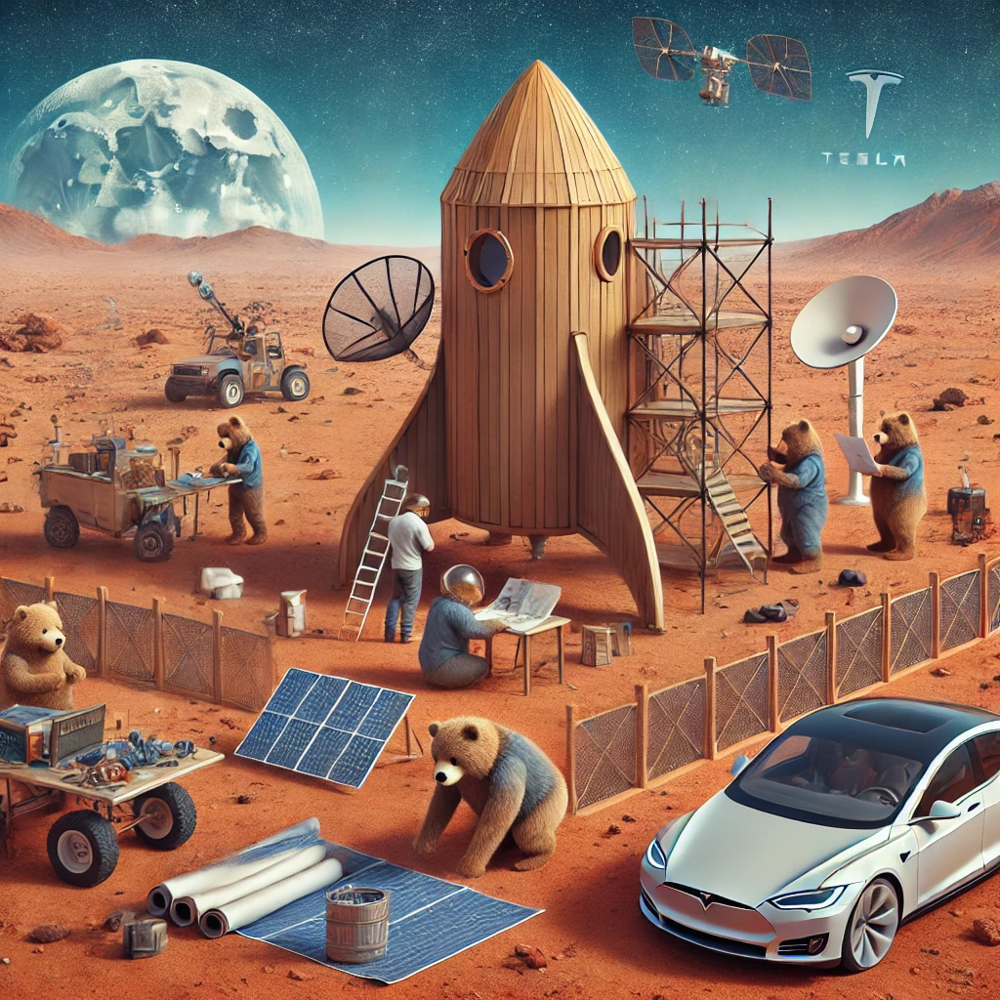
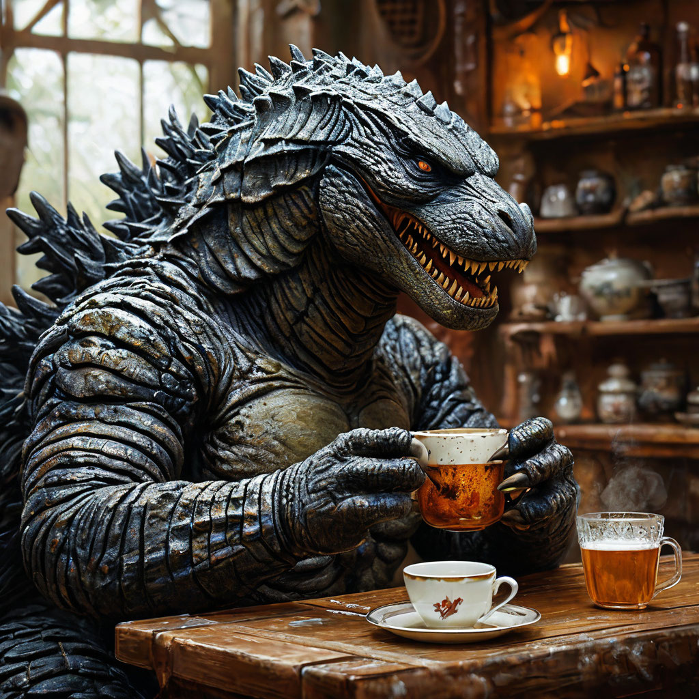

Совместные проекты Заборостроительного Университета
Межпланетный переворот, Олег Данилов, Илон в Маске и не только
Штирлиц пришёл на встречу с Борманом в будёновке, напевая песню о Москве. «Вы бы хоть конспирацию соблюдали», — проворчал Борман. «Хорошо», — ответил Штирлиц и надел тёмные очки Про совместные проекты, мемуары Штирлица
Проекты
SpaceX x ZU
Совместный проект Малопендюринского Заборостроительного университета и SpaceX: от Ясеневских лесов до Марса

В мире, где границы возможностей становятся всё более размытыми, Малопендюринский Заборостроительный университет под руководством Муси Кузи и SpaceX Илона в Маске объявили о старте грандиозного совместного проекта. Целью их сотрудничества стало создание "марсианских нанозаборов" для колонизации Красной планеты и защиты её обитателей от загадочных кибермедведей.
Лаборатория Вихорькова специализируется на создании унитазов нового поколения, от моделей с искусственным интеллектом до устройств, которые перерабатывают отходы в энергию. Сам Игорь называет своё дело "наукой о замкнутых циклах", подчёркивая, что в его подходе конец любого процесса — это только начало нового.
"Каждый унитаз — это не просто устройство, это философия, это связь человека с окружающей средой", — утверждает Вихорьков.
Олегоданилизация — глобальная трансформация общества, основанная на объединении человечества вокруг образа и ценностей Олега Данилова. Этот процесс включает в себя создание единой идентичности, где каждый человек принимает имя, стиль и философию жизни Олега, направленную на единство, прогресс и гармонию.
PROJECT GODZILLA

Совместный проект Васи Пупкина и Годзиллы представляет собой уникальное партнерство, объединяющее креативный подход к инженерии и неординарные природные возможности. Идея сотрудничества зародилась во время их встречи в неформальной обстановке. Вася Пупкин, будучи активным популяризатором инновационных решений, предложил Годзилле участие в проекте, связанном с разработкой стратегически важных инженерных сооружений.
Планшетозаборы
В разработке
Заборостроительный Университет и известная технологическая компания Teclast объявили о старте совместного проекта по созданию уникального продукта — "планшетозаборов". Этот инновационный подход к строительству ограждений объединяет традиционное зодчество и современные технологии, предлагая совершенно новые возможности для городских и частных пространств.